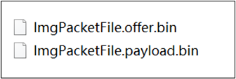
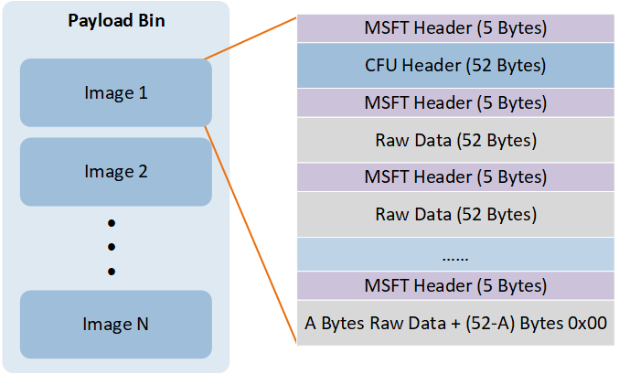
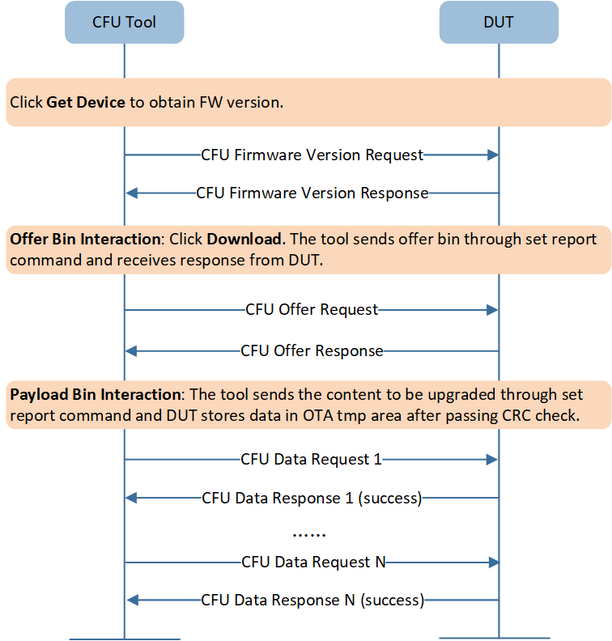
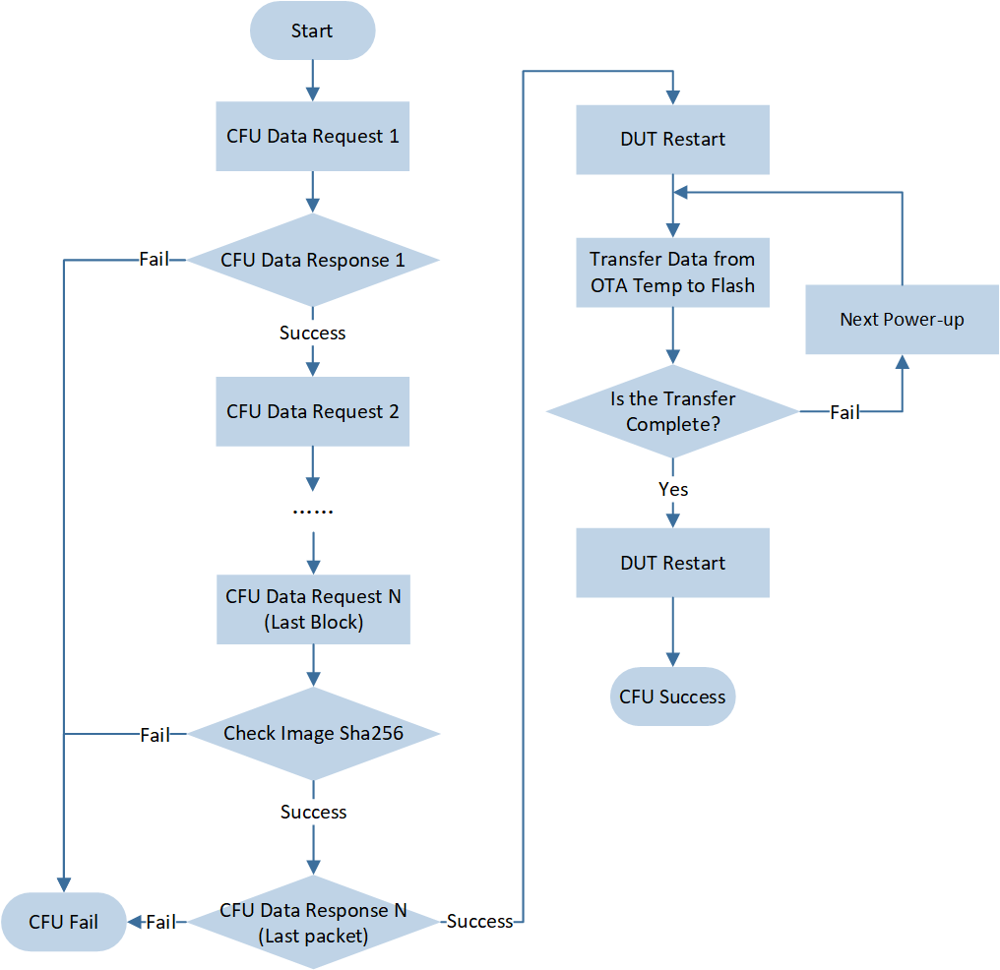

CFU V1
CFU 文件介绍
文件打包
Bank0 APP Image，Boot Patch Image，Bank0 System Patch Image，Bank0 BT Stack Patch Image 和 Bank0 BT Host Image 这五个 image 是可以被打包升级的。可以单独打包，也可以合并打包进行升级，不过需要确保升级的 image size（不包括 Boot Patch Image）不超过 flash map 配置的 OTA Temp 区的大小。
通过 MPPackTool.exe (选择 CFU V1) 可以选择需要升级的文件进行 CFU 打包，会生成 offer bin (name.offer.bin) 和 payload bin (name.payload.bin)，如下图所示。其中打包 Boot Patch Image 的时候，需要把 Bank0 Boot Patch Image 和 Bank1 Boot Patch Image 的两个 bin 文件一起打包。
{kind=link}

CFU 打包生成的文件
文件格式
Offer Bin
Offer bin 提供了 images 升级的基本信息，比如 IC ID，固件版本号等，在传输文件内容前和 tool 进行信息交互。
Byte |
Field |
Value |
|---|---|---|
Byte1 |
Segment number |
0x00 |
Byte2 |
Force ignore version (bit 7) |
0 - 升级的时候固件会检查版本是否允许升级（固件端实现，以实际代码为准） 1 - 升级的时候固件不会检查版本，进行强制升级 |
Force immediate reset (bit6) |
0 - 传输完成升级文件后 IC 是否重启不做要求 1 - 传输完成升级文件后 IC 立即重启 |
|
Reserved (bit5-bit2) |
0x00 |
|
Image type (bit1-bit0) |
0 - Bank0 APP Image 1 - Bank0 BT Host Image 2 - Bank0 System Patch Image 3 - other image |
|
Byte3 |
Component ID |
IC 的 ID，其中 87x2G 为 0x0f |
Byte4 |
Token |
0x00 |
Byte5-Byte8 |
FW Version |
低字节在前，version 是 4 段式的（x.x.x.x），但不是按 byte 分段的，需要进行特别的解析，在 tool 中正确的显示，具体可以参考 CFU Tool demo code |
Byte9-Byte12 |
Reserved |
0x00 |
Byte13 |
Reserved (bit7-bit6) |
0x00 |
Bank (bit5-bit4) |
0 - bank0 (用于 dual bank 升级) 1 - bank1 (用于 dual bank 升级) 2 - single bank (CFU V1 只支持单 bank 升级，因此该字段只能为 2) |
|
Protocol version (bit3-bit0) |
0x04 |
|
Byte14-Byte16 |
Reserved |
0x00 |
Payload Bin
Payload bin 是将待升级文件的 images，按照 Realtek 自定义格式重新组包生成的文件，包含了所有 images 的具体内容。
其组包过程如下：
将待升级文件 1 的 MP image，去掉 MP Header，只留真正需要写到 flash 中的 raw data。
将待升级文件 1 的 raw data 加上 CFU header，CFU header（52 bytes）结构如下：
CFU Header Data Field
Size（byte）
Value
Image ID
2
0 - Bank0 APP Image
1 - Bank0 BT Host Image
2 - Bank0 System Patch Image
3 - other image
Image Version
4
低字节在前，version 是 4 段式的（x.x.x.x），但不是按 byte 分段的
End Address
4
先将该 image raw data 补 0，保证 size 是 52 的倍数后，再加上 CFU header 后的总 image size
Image Length
4
步骤 1 得到的 image raw data 的实际 size
Reserved
38
0x00
将待升级文件 2-N 都按照步骤 1 和 2 处理并拼接。
将上述得到的文件内容，每 52 byte 加上 MSFT header，Payload Bin 组包 示意图如下所示。
MSFT Header Data Field
Size (byte)
Value
Address
4
该 MSFT header 对应的文件内容的起始地址
Length
1
52

Payload Bin 组包
举例
文件 address 0x00 开始加上第一个 MSFT header：0x00 0x00 0x00 0x00 0x34文件 address 0x34 开始加上第二个 MSFT header：0x34 0x00 0x00 0x00 0x34
{kind=link}
CFU 流程概述
{kind=link}

CFU 简要流程图
过滤设备
CFU tool 根据 CFUTOOLSettings.ini 中配置的 VID、 PID、UsagePage、UsageTlc、SerialNumber 这些信息，过滤出当前符合条件的 USB 设备，如下所示。
[CFU_VIA_USB_HID]
Vid=0x0bda
Pid=0x4762
UsagePage=0xff0b
UsageTlc=0x0104
...
[DEVICE]
SerialNumber=
提示
VID、PID、SerialNumber 都可以在 APP 层通过宏自行设定，其中，如果
CFUTOOLSettings.ini的 SerialNumber 一栏为空，表示不过滤这项信息。UsagePage、UsageTlc 可以在 CFU interface 的 report map 获取。
传输过程
CFU Firmware Version Request and Response
CFU tool 通过 get report (report id 0x2A)，获取待升级设备的固件信息，具体信息如下：
Byte |
Field |
Value |
|---|---|---|
Byte1 |
Component count |
0x01 |
Byte2-Byte3 |
Reserved |
0x00 |
Byte4 |
Reserved (bit7-bit4) |
0x00 |
Protocol version (bit3-bit0) |
0x04 |
|
Byte5-Byte8 |
FW version |
低字节在前，version 是 4 段式的（x.x.x.x），但不是按 byte 分段的，需要进行特别的解析，在 tool 中正确的显示，具体可以参考 CFU Tool demo code |
Byte9 |
Reserved (bit7-bit2) |
0x00 |
Bank (bit1-bit0) |
0x02（表示单 bank） |
|
Byte10 |
Component ID |
IC 的 ID，其中 87x2G 为 0x0f CFU tool 目前不做判断 |
Byte11-Byte12 |
Platform ID |
CFU tool 目前不做判断 |
Byte13-Byte60 |
Reserved |
0x00 |
CFU Offer Request
CFU tool 通过 Set report (report id 0x2D)，将 offer bin 的全部内容发送给待升级设备。Offer bin 内容参考 Offer Bin。
打包工具生成的 offer bin 中 Force ignore version 固定为 0，如果本次升级需要进行强制升级，CFU offer request 中该字段需要改写为 1 后进行传输。
CFU Offer Response
待升级设备收到 CFU Offer Request 以后，需要对收到的 offer request 内容进行判断，并通过 USB IN transfer 将带判断结果的 response 发送给 CFU tool (report id 0x2D)。其中 Component ID 必须进行判断；当 Force ignore version 为 0 时，可以对 FW version 进行判断；Protocol version 和 Bank 可以根据需要选择是否要进行判断（默认没有判断）。
Byte |
Field |
Value |
|---|---|---|
Byte1-Byte3 |
Reserved |
0x00 |
Byte4 |
Token |
0x00 |
Byte5-Byte8 |
Reserved |
0x00 |
Byte9 |
当 offer status 为 FIRMWARE_UPDATE_OFFER_REJECT (0x02) 时有效 |
|
Byte10-Byte12 |
Reserved |
0x00 |
Byte13 |
FIRMWARE_UPDATE_OFFER_ACCEPT (0x01)：表示可以进行固件升级 其他值：表示发生 error，CFU tool 会停止升级 |
|
Byte14-Byte16 |
Reserved |
0x00 |
Offer Status Code |
Name |
Cause |
|---|---|---|
0x00 |
FIRMWARE_UPDATE_OFFER_SKIP |
这次的 offer request 需要被跳过，提示 CFU 驱动或上位机在下一个周期再次发送 offer |
0x01 |
FIRMWARE_UPDATE_OFFER_ACCEPT |
固件判断 offer request 里的信息是否合适，如果合适，则返回该值 |
0x02 |
FIRMWARE_UPDATE_OFFER_REJECT |
固件判断 offer request 里的信息是否合适，如果不合适，则返回该值 |
0x03 |
FIRMWARE_UPDATE_OFFER_BUSY |
这次的 offer request 需要被跳过，CFU 驱动或上位机不再继续处理 offer，随后会放弃升级、等待并重试相同的 offer、再发出 OFFER_NOTIFY_ON_READY 或 OFFER_INFO_START_ENTIRE_TRANSACTION，进而重新开始整个 offer 流程 |
0x04 |
FIRMWARE_UPDATE_OFFER_COMMAND_READY |
固件在收到 OFFER_NOTIFY_ON_READY 请求，并且准备好接收 offer 时发出 |
0xff |
FIRMWARE_UPDATE_CMD_NOT_SUPPORTED |
解析 offer 时出现一般性错误 |
Reject Reason Code |
Name |
Cause |
|---|---|---|
0x00 |
FIRMWARE_OFFER_REJECT_OLD_FW |
表明 offer 中的主、次版本号不比当前 image 的版本号新 |
0x01 |
FIRMWARE_OFFER_REJECT_INV_COMPONENT |
表明组件 ID (即 IC 的 ID) 和 offer 里的信息不匹配 |
0x02 |
FIRMWARE_UPDATE_OFFER_SWAP_PENDING |
表明之前的更新已下载但尚未应用 |
0x03 |
FIRMWARE_OFFER_REJECT_MISMATCH |
表明打包方式和所需的签名信息不匹配 |
0x04 |
FIRMWARE_OFFER_REJECT_BANK |
表明设备的 bank 正在被使用，无法更新 |
0x05 |
FIRMWARE_OFFER_REJECT_PLATFORM |
表明平台 ID 和 offer 里的信息不匹配 |
0x06 |
FIRMWARE_OFFER_REJECT_MILESTONE |
表明 Milestone 和 offer 里的信息不匹配 |
0x07 |
FIRMWARE_OFFER_REJECT_INV_PCOL_REV |
表明接收到的文件不支持 CFU 或 SFUA 协议修改版 |
0x08 |
FIRMWARE_OFFER_REJECT_VARIANT |
表明用于此设备的 Variant bit 的掩码为 0 |
CFU Data Request
CFU tool 通过 Set report (report id 0x2A)，将 payload bin 中的升级文件内容（除了 MSFT Header 外的全部内容）发送给待升级设备。待升级设备收到数据并检查通过后，将数据存储到 OTA Temp 区。
Byte |
Field |
Value |
|---|---|---|
Byte1 |
Flags |
0x80 - 整个 CFU 传输的第一笔数据 0x40 - 整个 CFU 传输的最后一笔数据 0x00/0x08 - 中间的数据 |
Byte2 |
Length |
52 |
Byte3-Byte4 |
Sequence Number |
从 0 开始每笔加 1 |
Byte5-Byte8 |
Target Address |
该笔数据对应的 MSFT Header Data 的 address |
Byte9-Byte60 |
CFU data |
payload bin data（去掉 MSFT Header） |
CFU Data Response
待升级设备收到 CFU Data Request 以后，通过 USB IN transfer 将 response 发送给 CFU tool (report id 0x2C)。
Byte |
Field |
Value |
|---|---|---|
Byte1-Byte2 |
Sequence Number |
与对应的 CFU Data Request 中的 Sequence Number 值相同 |
Byte3-Byte4 |
Reserved |
0x00 |
Byte5 |
FIRMWARE_UPDATE_SUCCESS（0x00）：表示该笔数据被正确接收、处理和写入 flash 其他值：表示发生 error，CFU tool 会停止升级 |
|
Byte6-Byte16 |
Reserved |
0x00 |
Status Code |
Name |
Description |
|---|---|---|
0x00 |
FIRMWARE_UPDATE_SUCCESS |
表明没有错误，已调用的函数被成功执行 |
0x01 |
FIRMWARE_UPDATE_ERROR_PREPARE |
表明无法执行以下操作
将配置数据复制到高位块 |
0x02 |
FIRMWARE_UPDATE_ERROR_WRITE |
表明无法写入 |
0x03 |
FIRMWARE_UPDATE_ERROR_COMPLETE |
表明在响应 FIRMWARE_UPDATE_FLAG_LAST_BLOCK 时无法调用新的 image |
0x04 |
FIRMWARE_UPDATE_ERROR_VERIFY |
表明在响应 FIRMWARE_UPDATE_FLAG_VERIFY 时，CFU 数据验证失败 |
0x05 |
FIRMWARE_UPDATE_ERROR_CRC |
表明在响应 FIRMWARE_UPDATE_FLAG_LAST_BLOCK 时，image 的 CRC 校验失败 |
0x06 |
FIRMWARE_UPDATE_ERROR_SIGNATURE |
表明在响应 FIRMWARE_UPDATE_FLAG_LAST_BLOCK 时，签名验证失败 |
0x07 |
FIRMWARE_UPDATE_ERROR_VERSION |
表明在响应 FIRMWARE_UPDATE_FLAG_LAST_BLOCK 时，版本验证失败 |
0x08 |
FIRMWARE_UPDATE_SWAP_PENDING |
表明 CFU 文件已更新并正在等待被调用。在调用完成前，不接受进一步的 CFU offer 和数据 |
0x09 |
FIRMWARE_UPDATE_ERROR_INVALID_ADDR |
表明目标地址无效 |
0x0a |
FIRMWARE_UPDATE_ERROR_NO_OFFER |
表明在没有接收到 CFU offer 的情况下，先收到了 CFU 数据报告 |
0x0b |
FIRMWARE_UPDATE_ERROR_INVALID |
一般错误：输入无效，比如数据长度无效或者实现时出现特定问题 |
升级成功或失败
在传输过程中，CFU tool 可能会收到以下 error response 的情况：
当 CFU tool 收到 offer response 中的 Offer status 不是 FIRMWARE_UPDATE_OFFER_ACCEPT (0x01)。
当 CFU tool 收到 data response 中的 Status Code 不是 FIRMWARE_UPDATE_SUCCESS (0x00)。
当 CFU tool 收到 error response 后，默认处理是认为本次升级失败，立即停止升级。
当 CFU tool 传输完最后一笔 data request（Flags 为 0x40）后，待升级设备对升级文件进行完整性校验通过后，回复 success response 给 CFU tool，认为本次升级成功。之后，升级设备会自行重启，并搬运 OTA Temp 中存储的升级文件到 flash 运行区域。待升级设备重启后，CFU tool 可以通过 CFU Firmware Version Request 获取版本号以确认是否真的升级成功，如下图所示。
{kind=link}

CFU 成功流程图
提示
针对 error response 的处理，V2.1.1.0 以及之前版本的 CFU tool 默认做法与最新版本有所区别，只有在收到 FIRMWARE_UPDATE_ERROR_WRITE 时会立即停止升级，其他 error 会进行 retry，依旧收到 error response，才会认为本次升级失败。如果用户想修改 tool 的这部分行为，可以参考 CFU Tool demo code。
CFU HID 描述符
#define REPORT_ID_CFU_FEATURE 0x2A
#define REPORT_ID_CFU_FEATURE_EX 0x2B
#define REPORT_ID_CFU_OFFER_INPUT 0x2D
#define REPORT_ID_CFU_OFFER_OUTPUT REPORT_ID_CFU_OFFER_INPUT
#define REPORT_ID_CFU_PAYLOAD_INPUT 0x2C
#define REPORT_ID_CFU_PAYLOAD_OUTPUT REPORT_ID_CFU_FEATURE
#define USAGE_ID_CFU_PAYLOAD_OUTPUT 0x61
#define USAGE_ID_CFU_FEATURE 0x62
#define USAGE_ID_CFU_FEATURE_EX 0x65
#define USAGE_ID_CFU_PAYLOAD_INPUT_MIN 0x66
#define USAGE_ID_CFU_PAYLOAD_INPUT_MAX 0x69
#define USAGE_ID_CFU_OFFER_INPUT_MIN 0x8A
#define USAGE_ID_CFU_OFFER_INPUT_MAX 0x8D
#define USAGE_ID_CFU_OFFER_OUTPUT_MIN 0x8E
#define USAGE_ID_CFU_OFFER_OUTPUT_MAX 0x91
0x06, 0x0B, 0xFF, // Usage Page (Vendor Defined 0xFF0B)
0x0A, 0x04, 0x01, // Usage (0x0104)
0xA1, 0x01, // Collection (Application)
// 8-bit data
0x15, 0x00, // Logical Minimum (0)
0x26, 0xFF, 0x00, // Logical Maximum (255)
0x75, 0x08, // Report Size (8)
0x95, 0x3c, // Report Count (60)
0x85, REPORT_ID_CFU_FEATURE, // Report ID (0x2A)
0x09, 0x60, // Usage (0x60)
0x82, 0x02, 0x01, // Input (Data,Var,Abs,No Wrap,Linear,Preferred State,No Null Position,Buffered Bytes)
0x09, USAGE_ID_CFU_PAYLOAD_OUTPUT, // Usage (0x61)
0x92, 0x02, 0x01, // Output (Data,Var,Abs,No Wrap,Linear,Preferred State,No Null Position,Non-volatile,Buffered Bytes)
0x09, USAGE_ID_CFU_FEATURE, // Usage (0x62)
0xB2, 0x02, 0x01, // Feature (Data,Var,Abs,No Wrap,Linear,Preferred State,No Null Position,Non-volatile,Buffered Bytes)
0x85, REPORT_ID_CFU_FEATURE_EX, // Report ID (0x2B)
0x09, USAGE_ID_CFU_FEATURE_EX, // Usage (0x65)
0xB2, 0x02, 0x01, // Feature (Data,Var,Abs,No Wrap,Linear,Preferred State,No Null Position,Non-volatile,Buffered Bytes)
// 32-bit data
0x17, 0x00, 0x00, 0x00, 0x80, // Logical Minimum (-2147483649)
0x27, 0xFF, 0xFF, 0xFF, 0x7F, // Logical Maximum (2147483646)
0x75, 0x20, // Report Size (32)
0x95, 0x04, // Report Count (4)
0x85, REPORT_ID_CFU_PAYLOAD_INPUT, // Report ID (0x2C)
0x19, USAGE_ID_CFU_PAYLOAD_INPUT_MIN,// Usage Minimum (0x66)
0x29, USAGE_ID_CFU_PAYLOAD_INPUT_MAX,// Usage Maximum (0x69)
0x81, 0x02, // Input (Data,Var,Abs,No Wrap,Linear,Preferred State,No Null Position)
0x85, REPORT_ID_CFU_OFFER_INPUT, // Report ID (0x2D)
0x19, USAGE_ID_CFU_OFFER_INPUT_MIN, // Usage Minimum (0x8A)
0x29, USAGE_ID_CFU_OFFER_INPUT_MAX, // Usage Maximum (0x8D)
0x81, 0x02, // Input (Data,Var,Abs,No Wrap,Linear,Preferred State,No Null Position)
0x19, USAGE_ID_CFU_OFFER_OUTPUT_MIN,// Usage Minimum (0x8E)
0x29, USAGE_ID_CFU_OFFER_OUTPUT_MAX,// Usage Maximum (0x91)
0x91, 0x02, // Output (Data,Var,Abs,No Wrap,Linear,Preferred State,No Null Position,Non-volatile)
0xC0, // End Collection